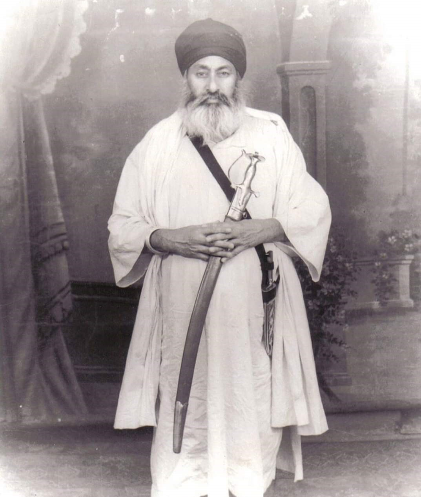
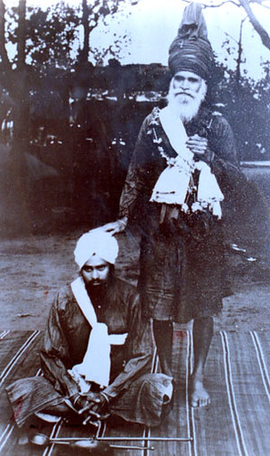
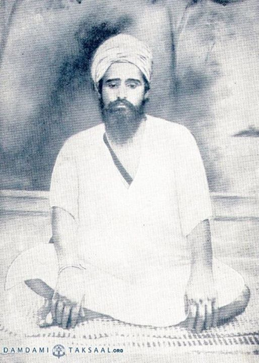

ਵਿਦਿਆਵੀਚਾਰੀਤਾਂਪਰਉਪਕਾਰੀ॥
Contemplate and reflect upon knowledge, and you will become a benefactor to others.



- Akhand Paath Bhog, Aarti Kirtan, at Sarbloh Bunga Nangli
- Baba Deep Singh Ji fought without a head Gurwinder Singh Ji Nangli
- Ajapa Jaap
- Etc., Dasam, Aarti of Sarbloh Darbar and Mahatam - Sant Gi Gurwinder Singh Nangli Wale
- How to chant Vahiguru Gurmantar by Gurwinder Singh Ji Nangli
- GianiGurwinderSingh Ji Video 6
- KARAM KATHA I GIANI GURWINDER SINGH JI JATHA NANGLI
- Events
- If they use this Maryada Ghisti then Brahmgiani appears in their house. I b GURWINDER SINGH NANGLI
- Jeevan Bilas baba nand singh ji 8th Jathedar Taruna Dal Baba Bakala Sahib Bhago.Gi Gurwinder Singh Nangli
- Jeevan Bilas Baba Nand Singh Ji Eighth Jathedar Tarna Dal Baba Bakala Sahib Bhago.
- Jeevan Bilas Baba Nand Singh Ji Eighth Jathedar Tarnadal Baba Bakala Sahib Part I BABA GURWINDER SINGH JI
- Why is there a need to chant the name I BABA GURWINDER SINGH JI JATHA NANGLI
- 18 December 2020
- GianiGurwinderSingh Ji Video 15
- Reading the Bani of Sri Sarabloh Granth Sahib Ji does not cause shortage of food and wealth.
- GianiGurwinderSingh Ji Video 17
- Sant Giani Sundar Singh Ji used to make direct visions of ten Patsahis from Guru Granth Sahib.
- Vahiguru Mahatam and Sakhi of Baba Pala Singh Ji
- When will the rule of Khalsa come I BABA GURWINDER SINGH JI JATHA NANAGLI
- GianiGurwinderSingh Ji Video 21
- GianiGurwinderSingh Ji Video 22
- GianiGurwinderSingh Ji Video 23
- Samadhi Di Katha I BABA GURWINER SINGH JI JATHA NANGLI
- GianiGurwinderSingh Ji Video 25
- GianiGurwinderSingh Ji Video 26
- Fatayabi of Kisan Morcha, Akhand Paath of Chandi War
- Bhog of one and a half lakh lessons of divine armor
- WAHEGURU MATAR KATHA I BABA GURWINDER SINGH NANGLI
- Naam Simran
- Bhog ceremony of Sehaj Path in memory of Guru Nanak Sahib
- Aarti
- A
- Complete Lesson Shi Diwali Lesson with Etiquette of Day 2 of Mahatma I GIANI SUKHCHAIN SINGH JI JATHA NANGLI
- GianiGurwinderSingh Ji Video 35
- Shri Diwali Path Mahatam (2-3 days with Etiquette) READ THE PATH I GIANI SUKCHAIN SINGH JI JATHA NANGLI
- Dear Bhai Daya Singh Wali Bir (Aurangabad) Darshan Karo Darshan I GIANI
- GianiGurwinderSingh Ji Video 38
- Giving information about Diwali text Mahatma Pothi I GIANI DEEP SINGH JI POUNTA SAHIB WALE (JATHA NANGLI)
- Bhog Sri Guru Granth Sahib Ji by Gurwinder Singh Nangli
- Narrative
- Katha Guru Tegh Bahadur Ji's Holy History Part-2 (Bhai Kharag Singh Vidyarthi Sarbloh Bunga Jatha Nangli)
- Holy History of Katha Gur Tegh Bahadur Ji Part-2 (Bhai Kharag Singh Vidyarthi Sri Sarabloh Bunga Jatha Nangli)
- Gijsveer Singh Kohala (Student Sri Sarabloh Bunga, Jatha Nangli)
- Pothi Sahib of Diwali Mahatam by Jasveer Singh Kohala (Student Sri Sarabloh Bunga Jatha Nangli)
- Katha Gur Itihas - Bhai Kharag Singh (Student Sarbloh Bunga Jatha Nangli)
- Katha Gur Itihas Bhai Kharag Singh (Student Sarbloh Bunga Jatha Nangli)
- Katha Gur Itihas Bhai Kharag Singh (Student Sri Sarabloh Bunga Nangli)
- Katha Gur Itihas Bhai Randhir Singh (Student Sri Sarabloh Bunga Nangli)
- Hukam to learn everything is Guru Manyo Granth
- Fufar or Fufar Giani Satnam Singh Jogewal
- Katha of Gur Itihas - Bhai Randhir Singh (Student Sarbloh Bunga Jatha Nangli)
- Story of Gur Itihas - Bhai Kharag Singh (Student Sarbloh Bunga Jatha Nangli)
- Gur Ithas Di Katha-Giani Gurwinder Singh Ji Nangli (Sri Sarabloh Bunga Jatha Nangli ,,)
- Practice of Gur Itihas Di Katha - Bhai Kharag Singh (Student Sarbloh Bunga Jatha Nangli)
- Practice of Katha of Gur Itihas by Bhai Ranbir Singh (Student Sarbloh Bunga Jatha Nangli)
- Practice of Katha of Gur Itihas, -Gi Ranbir Singh (Student Sarbloh Bunga Jatha Nangli,)
- Gurmat Vichar - Giani Ranbir Singh (Student Sri Sarabloh Bunga Jatha Nangli)
- Dasam Guru Granth Sahib Mandan Sant Darsan Singh Ji Sastri
- Valuable information about Sri Dasham Granth Ji which you have never heard. I BABA GURWINDER SINGH JI NANGLI
- GianiGurwinderSingh Ji Video 61
- Mahima of Vahiguru Mantra from Shri Sarabloh Parkash Granth I BABA GURWINDER SINGH NANGLI WALE
- GIANI SHER SINGH JI AMBALE WALE AT SARBLOH BUNG SHRI HAZOOR SAHIB
- From Sarbloh Parkash Granth, Gur Pad Astotar (Part = 3) Giani Gurwinder Singh Ji Nangli
- From Sarbloh Parkash Granth, Ikadasi Gurbans Astotar (Part = 2) Giani Gurwinder Singh Ji Nangli
- Parupkari Mahapurakh Sant Baba Daya Singh Ji Tahli Sahib Wale GIANI GURWINDER SINGH JI NANGLI WALE
- From Sri Sarabloh Parkash Granth, Gur Nanak Gadi Namah Patshahi Dasviin (Part = 1) Giani Gurwinder Singh Ji Nangli
- Hukamnama Katha From Amritsar | Hukamnama Harmandir Sahib | Giani Gurwinder Singh Ji | 29 July 2020
- Thoughts on Sukhmana Sahib Bani
- Aad Darbar Dasam Darbar Sarbloh Darbar are the same form I GIANI VARJINDER SINGH JI SHRI HAZOOR SAHIB WALE
- Hear the existence and greatness of Sarb Loh Granth from Giani Gurwinder Singh Nangli
- Praise of the Sword I BABA GURWINDER SINGH NANGLI WALE
- Jafarnamah Itihas Parchar Giani Gurwinder Singh Ji Nangli
- Five pronunciations of Tipi Giani Gurwinder Singh Ji Nangli
- Why the world is false / Part-2 / Meaning of "Cast Me Rehta Bhayo" / Giani Gurwinder Singh Nangli
- Why the world is false / Part-2 / "The meaning of cast me rehta"
- Ignorance / Giani Gurwinder Singh Nangli
- Mahatam Giani Gurwinder Singh Ji Nangli of Jafarnamah
- Giani Gurwinder Singh Ji Nangli
- SOME QUESTIONS AND ANSWERS ON SHRI JAFARNAMAH SAHIB SONG BY DR SATINDAR SARTAJ
- Giani Gurwinder Singh Ji Nangli has written about Karona in Guru Granth Sahib Ji
- Sukhmani Sahib Jina Mahatam Hai Akal Ustati Da (Giani Gurwinder Singh Ji Nangli)
- Summary of Sarbloh Parkash Granth Giani Gurwinder Singh Ji Nangli
- Devotion is better than knowledge Giani Gurwinder Singh Ji Nangli
- Tal Firang Giani Gurwinder Singh Ji Nangli
- bhagti mehma Bhagti Mahima Giani Gurwinder Singh Ji Nangli
- GianiGurwinderSingh Ji Video 87
- Bhog of Dasam Guru Granth Giani Gurwinder Singh Nangali
- Giani Gurwinder singh Ji Nangali performing foreign Sikh Jafarnamah at Miri Peeri Academy
- Ram and Siam Kalgidhar's surnames were Giani Gurwinder Singh Ji Nangli
- sarbloh bani da parchaar Preaching of Sarbloh Bani - Giani Gurwinder Singh Ji Nangli
- Mahatam Giani Gurwinder Singh Ji Nangli to read and listen to Sarbloh Bani
- Giani Gurwinder Singh Ji Nangli
- Giani Gurwinder Singh Ji Nangli from Sarbloh Granth
- Discussion with foreign Sikhs at the site of Samadha Baba Naudh Singh Ji Goshti Giani Gurwinder Singh Ji Nangli
- Request to Christian community not to preach Christianity with the help of Gurbani Giani Gurwinder Singh Ji Nangli
- GianiGurwinderSingh Ji Video 97
- Katha = Persian Munajat Part = 3 (From Sarbloh Granth) Giani Gurwinder Singh Ji Nangli
- Katha = Persian Munajat Part = 2 (From Sarbloh Granth) Giani Gurwinder Singh Ji Nangli
- Katha = Persian Munajat Part = 1 (From Sarbloh Granth) Giani Gurwinder Singh Ji Nangli
- GianiGurwinderSingh Ji Video 101
- Katha = Giani Gurwinder Singh Ji Nangli in Sarbloh Laghu Kavach (Understand the daily routine of Puratan Singhs)
- A combination of Gur Pratap Suraj Granth and Bhai Gurdas Ji's verses Giani Gurwinder Singh Ji Nangli
- Giani Gurwinder Singh Ji Nangli in Katha-Sarbloh Kavach
- Miri Peeri Academy Sixth
- Kalgidhar ji was a priest of love, not of logic? Giani Gurwinder Singh Ji Nangli
- Diwali Path Mahatam's Bhog and Singh Sahib Jathedar Baba Gajjan Singh Ji at Samadha Baba Naudh Singh Ji
- Divali Mahatama Da Patha Diwali Mahatam Da Patha, Giani Gurwinder Singh at Sri Sarabloh Bunga Nangli
- Sri Sarabloh narrating the story of Bhujangi Singh Panth Parkash at Bunga Nangli
- Thoughts regarding Mata Bhago
- Bhai Samadh Nanaksar Moga Giani Gurwinder Singh Nangli
- Giani Gurwinder Singh Ji Nangli Wale is found in 24 hours during Kali Yuga
- Giani Gurwinder Singh Ji Nangli Wale
- Where is Sarbloh Bani the cure for all sorrows and where is Sarbloh Bani composed? Gurwinder Singh Nangli 9914647591
- Giani Gurwinder Singh Ji Nangli Wale in Short Sarbloh Kavach
- Bhog of Sri Sarbloh Parkash Granth Sahib Ji at Sarbloh Bunga Nangli (Part-2)
- Bhog of Sri Sarabloh Parkash Granth Sahib at Sarabloh Bunga Nangli (Part-1)
- Bhavarsammit Part-2 by Gurwinder Singh Ji Nangli Wale
- Giani Jangbir singh's appeal to reach the orgasm of the story
- Tell the story of Vaisakhi (Giani Gurwinder Singh Ji Nangli Wale)
- Why is Japji Sahib recited at the bhog of Akhand Path? Baba Gurwinder Singh Ji Nangli wale nangli
- In the eyes of Hola Mohalla Bhai Nandlal Ji, Baba Gurwinder Singh Ji Nangli wale nangli9914647591
- Katha -Hola Mohalla Gu: Manji Sahib New City Giani Gurwinder Singh Ji Nangli Wale Nangli
- Why the presidency of the five? Giani Gurwinder Singh Ji Nangli wale nangli9914647591
- Katha - Hola Mohalla in the words of Sant Nihal Singh Ji (Gurwinder Singh Nangli wale nangli)
- Guru Nanak Dev Ji was the incarnation of Vishnu or Giani Gurwinder Singh Ji of Akal Purakh Nangli Wale Nangli
- The story of the month of Chet (meaning of Chet, Vaisakh, Jeth, Har according to the season). Baba Gurwinder Singh Nangli
- Chant this on Holi days then Kalgidhar ji is very happy Giani Gurwinder Singh ji Nangli wa
- Foreign Sikh Samadha Baba Naudh Singh Ji serving at Shaheed, doing Santha
- Katha - Shaheed Bilas Baba Deep Singh Ji Shaheed (Part-2) Vidya Martand Giani Gurwinder Singh Ji Nangli
- Vidya Martand Giani Gurwinder Singh Ji Nangli Katha - Shaheed Bilas Baba Deep Singh Ji Shaheed (Part-1)
- Roop Deep Pingal (Part_7) Giani Gurwinder Singh Ji Nangli Wale
- Sarbloh Parkash Granth Sahib Ji's text Bodh Chaba
- Katha-Akhin Ghata Mukh Vich Data (Vidya Guru Vidya Martand Giani Gurwinder Singh Ji Nangli Wale Nangli
- If you want to go somewhere, read these words, every task will be completed
- Dhan Dhan Baba Gurdit Singh Ji Founder Tarna Dal Mehta Chowk (Vidya Guru Vidya Martand Giani Gurwinder Singh Ji
- Don't argue, have faith (Vidya Guru Vidya Bhushan Giani Gurwinder Singh Ji Nangli Wale
- Katha of Sri Sarabloh Parkash Granth Sahib Ji (Gi Sukha Singh Ji u.k)
- Katha = Baba Deep Singh Ji Village Dayalgarh Vidya Guru Giani Gurwinder Singh Ji Nangli Nangli
- GianiGurwinderSingh Ji Video 140
- Giani Mehtab Singh Ji Bhamboi honored on arrival in Canada
- GianiGurwinderSingh Ji Video 142
- Martand Guru Gobind Singh Ji of Chhand Sastra, Shabadbodh and Alankaar (Listen to the story of Sarbloh Parkash Granth Sahib Ji)
- The secrets of Bhasauris (the truth of modern and ancient printed secrets)
- Complete Biography of Baba Deep Singh Ji Shaheed, Baba Naudh Singh Ji Shaheed, Baba Sudha Singh Ji Shaheed Baba Gurwinder Singh
- Listen to the method of bowing at Guru Charna from Sarbloh Parkash Granth (Baba Gurwinder Singh Ji Nangli)
- Where there was no warrior like Kalgidhar ji, there was no prosody poet like him.
- Sarbloh Parkash Senthia - Samadha Baba Naudh Singh Ji
- Pingal Steak written by Sant Sangat Singh Nirmala greats
- Diwan-e-Goya Semagam Malaysia 2019
- Deewane Goya Malaysia Part-9 (Nasiro Mansoor, Kalgidhar Ji's 108 Name Series) Baba Gurwinder Singh Nangli
- Deewane Goya Malaysia Part-7 (A garland of 108 beads in the name of Nasiro Mansoor, Kalgidhar ji) Baba gurwinder Singh ji
- Janam Katha - First Jathedar of Tarne Dal Nihang Singh Baba Deep Singh Ji Martyred - Gurwinder Singh Ji Nangli
- Diwane Goya Malaysia Sectarian Pronunciation Bodh Part-1 (Fifty Letters
- On arrival in Malaysia, Baba Gurwinder Singh Ji Nangli was respected by the Singhs
- Deewane Goya Malaysia Part-6 (Nasiro Kalgi, a garland of 108 beads in the name of Dhar Ji) Baba Gurwinder Singh Nangli
- Deewane Goya Malaysia Part-5 (Nasiro Mansoor, a garland of 108 beads named after Kalgidhar) by: gurwinder singh nangli
- Deewane Goya Malaysia Part-4 (Guru Nanak Dev Ji's Conversation with Akal Purakh from Vein River)
- Diwane Goya Malaysia Sectarian Pronunciation Bodh Part-2 (Fifty Letters
- Deewane Goya Malaysia Part-3 (Baba Nanak Ji's Conversation with Akal Purakh from Vein River) Baba Gurwinder Singh Nangli
- Deewane Goya Malaysia Part-2 (Guru Nanak Mahima Ganj Nama Goya) Baba Gurwinder Singh Nangli
- Deewane Goya Malaysia Part-1 (Jeevan Bhai Nandlal) Baba Gurwinder Singh Ji Nangli
- Diwan dedicated to Bhai Nand Lal Ji started in Malaysia
- The bhog of one and a half lakh chants of the divine armor took place at Guru Bunga Bhamboi
- Pothi Sahib Benti Blessed by Kalgidhar Ji to Bhai Nand Lal Ji Baba Gurwinder Singh Nangli
- Baba Gurwinder Singh Ji Nangli is arriving in Malaysia
- Gurwinder Singh Nangli Sri Sarabloh Bunga Nangli
- Attending the inauguration of Sri Sarabloh Bunga Nangli and other Gurmat Samagam dedicated to Bhai Nandlal Ji
- March 15, 2018
- Laying the foundation of Bhai Nandlal Gurmat Vidyalaya as Mehtab Singh Panj Piarya
- Panj Singh praying for the foundation of Bhai Nandlal Gurmat Vidyalaya
- Recitation of Sri Sarabloh Parkash Granth by Bodh Samagam Part-2.
- Sri Sarabloh Parkash Granth Path Bodh Samagam Part-2. Judgment of the pronunciation of Tv Prasad. Sant Darshan Singh
- Recitation of Sri Sarabloh Parkash Granth by Bodh Part-1. Verses No. 1-5.
- Recitation of Sri Sarabloh Parkash Granth Samagam Part-2.
- Recitation of Sri Sarabloh Parkash Granth Bodh Vichar Samagam Part-2. Verses 303 to 322. Gurwinder Singh Nangli
- Bhujangi Nishan Singh reciting Dussehra Mahatam on Shastar Pujan Divas at Samadha Baba Naudh Singh
- Pure Recitation of Sri Sarbloh Parkash Granth Part-I. Verses No. 179 to 303. Gurwinder Singh Nangli.
- Path Bodh Samagam of Sri Sarabloh Prakash Part-2. Verses 162 to 179 / Gurwinder Singh Nangli
- Recitation of Sri Sarabloh Parkash Granth Samagam Part-2.
- Recitation of Sri Sarabloh Parkash Granth Ji Part-1. Chhand Nos. 1 to 2
- Path Bodh Samagam of Sri Sarabloh Parkash Granth Part-2.
- Recitation Ceremony of Sri Sarabloh Parkash Granth Part-3.2. Verses No. 1 to 5
- Path Bodh Samagam of Sri Sarabloh Prakash Granth Ji Part-2. Verses No. 1 to 2
- Pure Recitation of Sri Sarabloh Prakash Granth Samagam Part-2.2.
- Path Bodh Samagam of Sri Sarabloh Parkash Granth Part-1.
- Recitation of Sri Sarabloh Parkash Granth Samagam Part-2. Gurwinder Singh Nangli
- Pure Recitation of Sarbloh Parkash Granth Sahib Ji Part-2.
- Why Nihang Singh is guarding Bibek Gurwinder Singh Nangli (Sect Bhai Nandlal Ji)
- baba makhan singh da .vo 3 tarna dal
- The hidden meaning of "Sant Ke Marg Dharam Ki Pauri" by Gurwinder Singh Nangli
- Is the state of a Braham Gyani and the state of a child the same or different; Giani Gurwinder Singh
- diwali te sarab loh granta da path
- Are the incarnations of Vishnu equal to Guru Nanak Dev or not? Gurwinder Singh Nangli
- Meaning of "Se Muktu Se Muktu Bhaye" (Ustad Ji, Ustad Gi Gurwinder Singh Nangli)
- Why the world is false (Vichar Mala Granth) Giani Gurwinder Singh Nangli